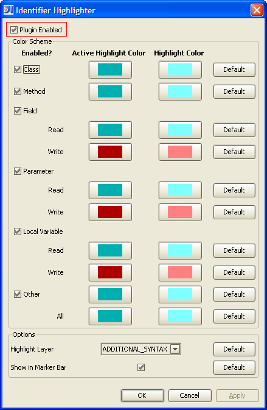

General Options
Currently, the only general option is to disable the entire plugin such that no highlighting
is performed in a code editor window. This ability to turn on and off the entire plugin
can also be achieved through the right mouse popup menu in the code editor and via the
keyboard shortcut Shift+Alt+T.
